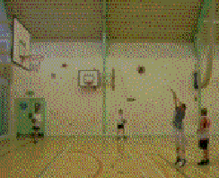

Double-click this node to open a video in Tracker. The video is downloaded to a local cache before being opened.

Note: this animated gif video is only one of many video types supported by Tracker. Your video resources may be any supported type.